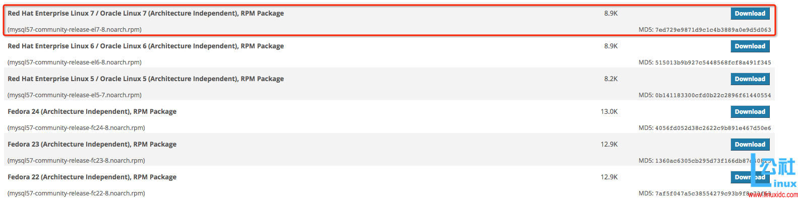
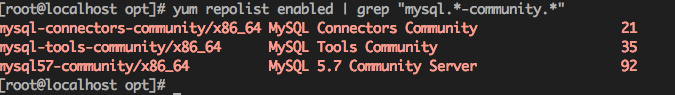
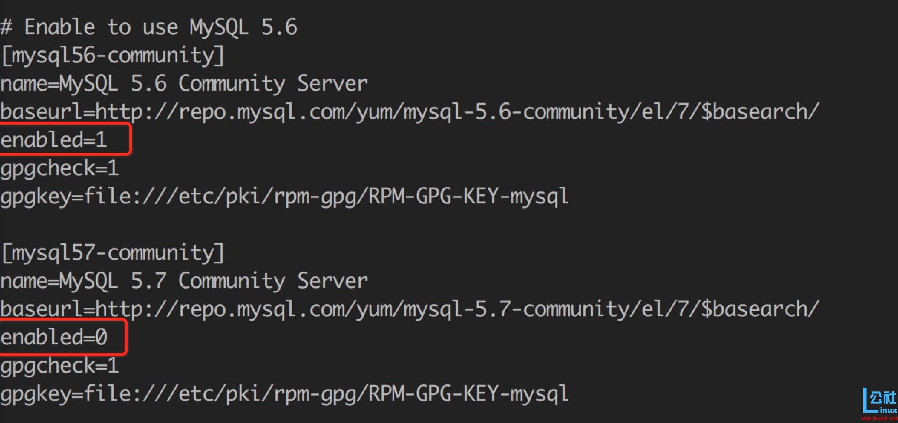
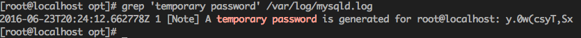
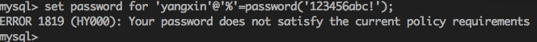
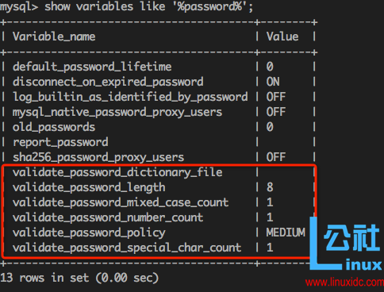
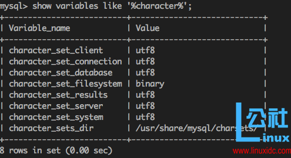

# CentOS7下MySQL安装与配置
# 介绍
[TOC]
安装环境：CentOS7 64位 MINI版，安装MySQL5.7
# 1、配置YUM源
在MySQL官网中下载YUM源rpm安装包：http://dev.mysql.com/downloads/repo/yum/ 
# 下载mysql源安装包
shell> wget http://dev.mysql.com/get/mysql57-community-release-el7-8.noarch.rpm
# 安装mysql源
shell> yum localinstall mysql57-community-release-el7-8.noarch.rpm
检查mysql源是否安装成功
shell> yum repolist enabled | grep "mysql.*-community.*"

看到上图所示表示安装成功。
可以修改vim /etc/yum.repos.d/mysql-community.repo源，改变默认安装的mysql版本。比如要安装5.6版本，将5.7源的enabled=1改成enabled=0。然后再将5.6源的enabled=0改成enabled=1即可。改完之后的效果如下所示：

# 2、安装MySQL
shell> yum install mysql-community-server
# 3、启动MySQL服务
shell> systemctl start mysqld
查看MySQL的启动状态
shell> systemctl status mysqld
● mysqld.service - MySQL Server
Loaded: loaded (/usr/lib/systemd/system/mysqld.service; disabled; vendor preset: disabled)
Active: active (running) since 五 2016-06-24 04:37:37 CST; 35min ago
Main PID: 2888 (mysqld)
CGroup: /system.slice/mysqld.service
└─2888 /usr/sbin/mysqld --daemonize --pid-file=/var/run/mysqld/mysqld.pid
6月 24 04:37:36 localhost.localdomain systemd[1]: Starting MySQL Server...
6月 24 04:37:37 localhost.localdomain systemd[1]: Started MySQL Server.
# 4、开机启动
shell> systemctl enable mysqld
shell> systemctl daemon-reload
# 5、修改root本地登录密码
mysql安装完成之后，在/var/log/mysqld.log文件中给root生成了一个默认密码。通过下面的方式找到root默认密码，然后登录mysql进行修改：
shell> grep 'temporary password' /var/log/mysqld.log

shell> mysql -uroot -p
mysql> ALTER USER 'root'@'localhost' IDENTIFIED BY 'MyNewPass4!';
或者
mysql> set password for 'root'@'localhost'=password('MyNewPass4!');
注意：mysql5.7默认安装了密码安全检查插件（validate_password），默认密码检查策略要求密码必须包含：大小写字母、数字和特殊符号，并且长度不能少于8位。否则会提示ERROR 1819 (HY000): Your password does not satisfy the current policy requirements错误，如下图所示： 
通过msyql环境变量可以查看密码策略的相关信息：
mysql> show variables like '%password%';
 validate_password_policy：密码策略，默认为MEDIUM策略 validate_password_dictionary_file：密码策略文件，策略为STRONG才需要 validate_password_length：密码最少长度 validate_password_mixed_case_count：大小写字符长度，至少1个 validate_password_number_count ：数字至少1个 validate_password_special_char_count：特殊字符至少1个 上述参数是默认策略MEDIUM的密码检查规则。
共有以下几种密码策略：
| 策略 | 检查规则 |
|---|---|
| 0 or LOW | Length |
| 1 or MEDIUM | Length; numeric, lowercase/uppercase, and special characters |
| 2 or STRONG | Length; numeric, lowercase/uppercase, and special characters; dictionary file |
MySQL官网密码策略详细说明：http://dev.mysql.com/doc/refman/5.7/en/validate-password-options-variables.html#sysvar_validate_password_policy
# 修改密码策略
在/etc/my.cnf文件添加validate_password_policy配置，指定密码策略
# 选择0（LOW），1（MEDIUM），2（STRONG）其中一种，选择2需要提供密码字典文件
validate_password_policy=0
如果不需要密码策略，添加my.cnf文件中添加如下配置禁用即可：
validate_password = off
重新启动mysql服务使配置生效：
systemctl restart mysqld
# 6、添加远程登录用户
默认只允许root帐户在本地登录，如果要在其它机器上连接mysql，必须修改root允许远程连接，或者添加一个允许远程连接的帐户，为了安全起见，我添加一个新的帐户：
mysql> GRANT ALL PRIVILEGES ON *.* TO 'yangxin'@'%' IDENTIFIED BY 'Yangxin0917!' WITH GRANT OPTION;
# 7、配置默认编码为utf8
修改/etc/my.cnf配置文件，在[mysqld]下添加编码配置，如下所示：
[mysqld]
character_set_server=utf8
init_connect='SET NAMES utf8'
重新启动mysql服务，查看数据库默认编码如下所示：

默认配置文件路径： 配置文件：/etc/my.cnf 日志文件：/var/log//var/log/mysqld.log 服务启动脚本：/usr/lib/systemd/system/mysqld.service socket文件：/var/run/mysqld/mysqld.pid